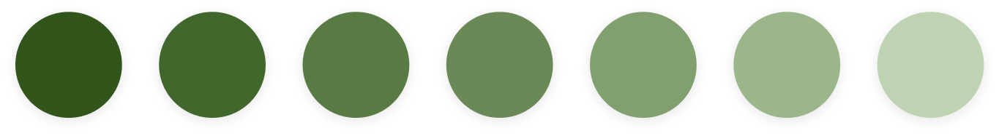
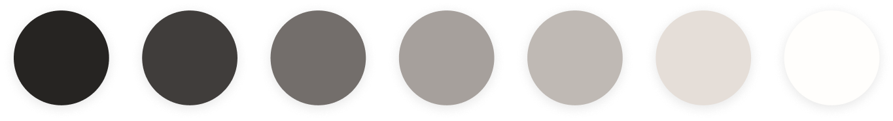
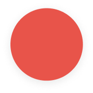
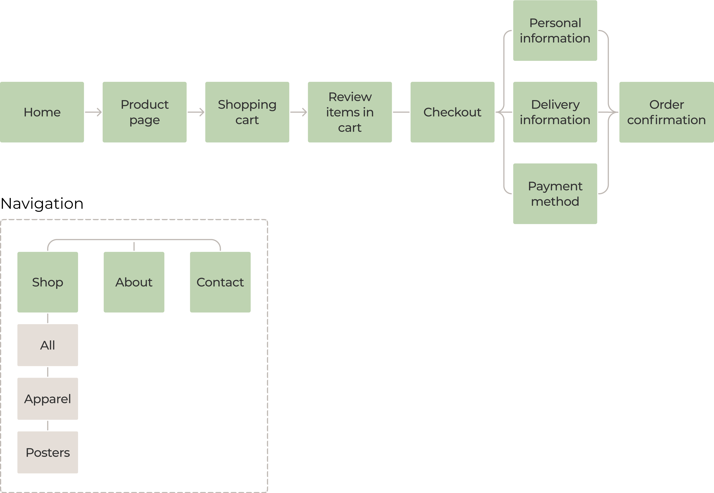
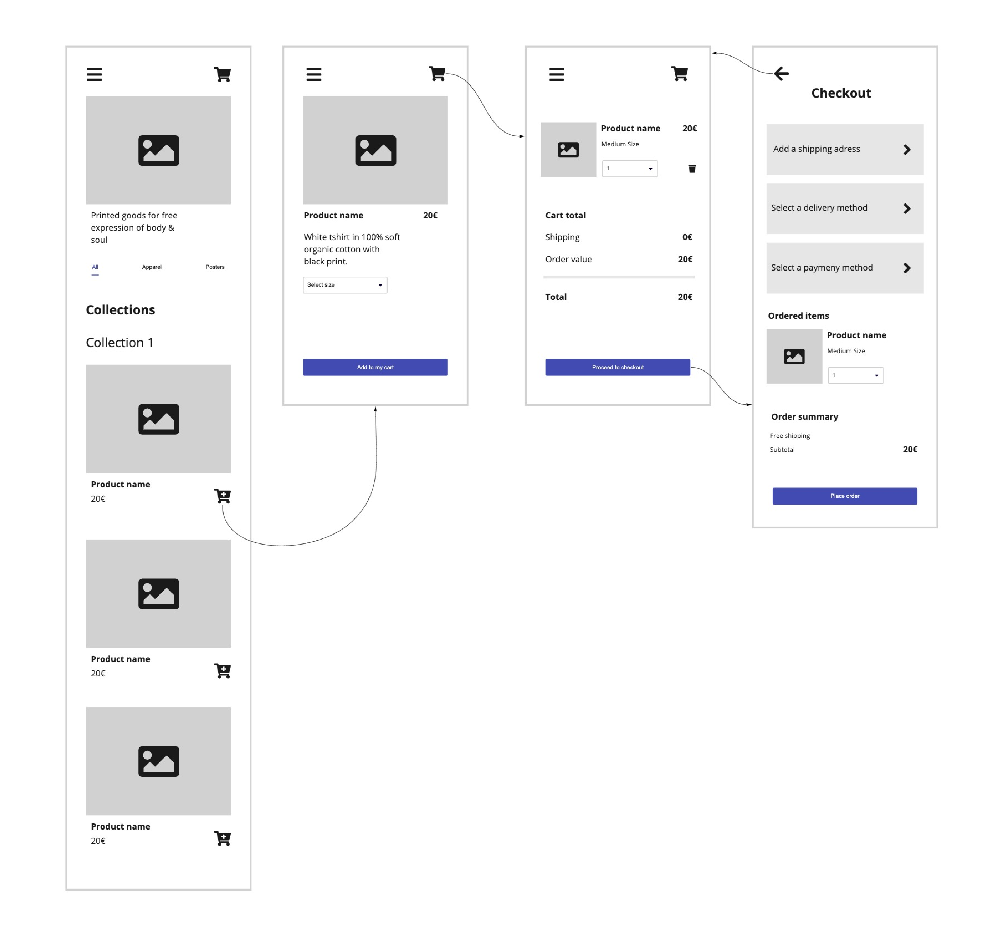

Fri Apparel
A UX/UI design & branding case study for a fashion brand (WIP)
My role
UX/UI designer & graphic designer
Context
Fri Apparel is a design project and brand created by me, with my own illustrations on clothing and accessories. The designs are inspired by minimalistic Scandinavian design and my passion for self-expression through abstract art. Fri means free in Swedish, which is exactly what Fri is all about: Free expression of body and soul.
Challenge
The brand is in need of establishing a design concept and an e-commerce website to market the products online. So far Fri Apparel has used direct contact with customers on Instagram for sales. An e-commerce website would therefore be an opportunity to strengthen the brand by gaining more online presence, and to improve the overall customer service and experience.
Objectives
- A unified brand that reflects the brand's values
- Improve online sales and presence through an e-commerce website.
Solution
A branded e-commerce website focused on creating a secure and user-friendly shopping experience. And a touchpoint for customers to discover and learn more about the brand.
Impact
A unified brand and a new touchpoint for sales and customer service.
Design Concept
Moodboard
To help define the visual design concept, I created a moodboard to gather inspiration that reflects the brand's values: Minimalism, creativity and self-expression.

Colors
As Fri Apparel is a brand that works with organic shapes and motives inspired by nature in the products, I decided to go for a green earthy tone as the primary color. I decided to stick to a simple and consistent color scheme, that reflects the brand's values and helps the user navigate.
Primary palette
Neutral palette
Alerts
I used the 60-30-10 color layout rule to balance the composition of the user interface. This helps users to have a clear direction of the intended user flow and indications, such as CTAs.

Typography
I choose DM Sans as it is a very legible Webfont that works great for small texts, which is ideal to ensure readability at the different text sizes that can be found in the detailed information of e-commerce. The look and feel of DM Sans are also in line with the clean aesthetics of Fri Apparel.
Type Web Max
Scale: 1.414 Augmented Forth
Type Web Min
Scale: 1.125 Major Second
Type Web Max
Scale: 1.333 Perfect Fourth
Type Web Min
Scale: 1.200 Minor Third
Imagery
We did a photoshoot for the brand to include images on the website that reflects the aestestic of the brand and showcases styling options with the different pieces.

UX & UI Design
User flow
I focused on creating an uncomplicated checkout user flow that shows progress and makes shoppers feel secure while completing the purchase.
Wireframing
Before creating the high fidelity prototype I created wireframes based on the user flow. As this project is still in progress, so far I've only created the mobile version. Creating wireframes helped me plan the layout of the interface, the visual consistency, and the hierarchy before creating the high-fidelity prototype. This was also helpful to see which components would be needed to be designed to compose the prototype.
Mobile UI components kit
I applied the concept of Atomic design by creating different base components, such as buttons and icons that later could be assembled to bigger components with different functionalities. Creating this design system helped me streamline the design process and maintain consistency throughout the prototyping process.

Prototype
I focused on creating a simple and minimal design to ensure that the users can clearly see where they can go when they first arrive, without feeling overloaded. To keep the navigation user-friendly I used visual cues with color contrasts and icons, to draw attention to the call to action. I also divided the products into different categories, that can be assessed from the home page as well as in the navigation menu.

Next steps
- Finalize the mobile prototype
- Design the desktop version of the e-commerce
- Conduct user tests of the prototype
- Prepare the product for delivery and launch